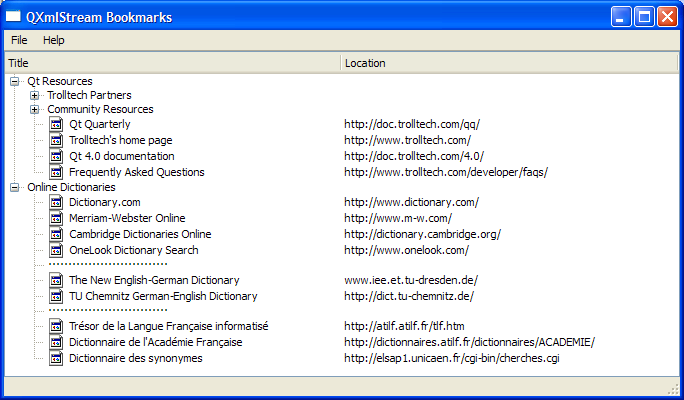
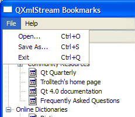
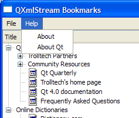

QXmlStream Bookmarks Example
Demonstrates how to read and write to XBEL files.
The QXmlStream Bookmarks example provides a reader for XML Bookmark Exchange Language (XBEL) files using Qt's QXmlStreamReader class for reading, and QXmlStreamWriter class for writing the files.

XbelWriter Class Definition
The XbelWriter class contains a private instance of QXmlStreamWriter, which provides an XML writer with a streaming API. XbelWriter also has a reference to the QTreeWidget instance where the bookmark hierarchy is stored.
class XbelWriter { public: explicit XbelWriter(const QTreeWidget *treeWidget); bool writeFile(QIODevice *device); private: void writeItem(const QTreeWidgetItem *item); QXmlStreamWriter xml; const QTreeWidget *treeWidget; };
XbelWriter Class Implementation
The XbelWriter constructor accepts a treeWidget to initialize within its definition. We enable QXmlStreamWriter's auto-formatting property to ensure line-breaks and indentations are added automatically to empty sections between elements, increasing readability as the data is split into several lines.
XbelWriter::XbelWriter(const QTreeWidget *treeWidget) : treeWidget(treeWidget) { xml.setAutoFormatting(true); }
The writeFile() function accepts a QIODevice object and sets it using setDevice(). This function then writes the document type definition(DTD), the start element, the version, and treeWidget's top-level items.
bool XbelWriter::writeFile(QIODevice *device) { xml.setDevice(device); xml.writeStartDocument(); xml.writeDTD(QStringLiteral("<!DOCTYPE xbel>")); xml.writeStartElement(QStringLiteral("xbel")); xml.writeAttribute(XbelReader::versionAttribute(), QStringLiteral("1.0")); for (int i = 0; i < treeWidget->topLevelItemCount(); ++i) writeItem(treeWidget->topLevelItem(i)); xml.writeEndDocument(); return true; }
The writeItem() function accepts a QTreeWidgetItem object and writes it to the stream, depending on its tagName, which can either be a "folder", "bookmark", or "separator".
void XbelWriter::writeItem(const QTreeWidgetItem *item) { QString tagName = item->data(0, Qt::UserRole).toString(); if (tagName == QLatin1String("folder")) { bool folded = !item->isExpanded(); xml.writeStartElement(tagName); xml.writeAttribute(XbelReader::foldedAttribute(), folded ? yesValue() : noValue()); xml.writeTextElement(titleElement(), item->text(0)); for (int i = 0; i < item->childCount(); ++i) writeItem(item->child(i)); xml.writeEndElement(); } else if (tagName == QLatin1String("bookmark")) { xml.writeStartElement(tagName); if (!item->text(1).isEmpty()) xml.writeAttribute(XbelReader::hrefAttribute(), item->text(1)); xml.writeTextElement(titleElement(), item->text(0)); xml.writeEndElement(); } else if (tagName == QLatin1String("separator")) { xml.writeEmptyElement(tagName); } }
XbelReader Class Definition
The XbelReader contains a private instance of QXmlStreamReader, the companion class to QXmlStreamWriter. XbelReader also contains a reference to the QTreeWidget that is used to group the bookmarks according to their hierarchy.
class XbelReader { public: XbelReader(QTreeWidget *treeWidget); bool read(QIODevice *device); QString errorString() const; static inline QString versionAttribute() { return QStringLiteral("version"); } static inline QString hrefAttribute() { return QStringLiteral("href"); } static inline QString foldedAttribute() { return QStringLiteral("folded"); } private: void readXBEL(); void readTitle(QTreeWidgetItem *item); void readSeparator(QTreeWidgetItem *item); void readFolder(QTreeWidgetItem *item); void readBookmark(QTreeWidgetItem *item); QTreeWidgetItem *createChildItem(QTreeWidgetItem *item); QXmlStreamReader xml; QTreeWidget *treeWidget; QIcon folderIcon; QIcon bookmarkIcon; };
XbelReader Class Implementation
The XbelReader constructor accepts a QTreeWidget to initialize the treeWidget within its definition. A QStyle object is used to set treeWidget's style property. The folderIcon is set to QIcon::Normal mode where the pixmap is only displayed when the user is not interacting with the icon. The QStyle::SP_DirClosedIcon, QStyle::SP_DirOpenIcon, and QStyle::SP_FileIcon correspond to standard pixmaps that follow the style of your GUI.
XbelReader::XbelReader(QTreeWidget *treeWidget) : treeWidget(treeWidget) { QStyle *style = treeWidget->style(); folderIcon.addPixmap(style->standardPixmap(QStyle::SP_DirClosedIcon), QIcon::Normal, QIcon::Off); folderIcon.addPixmap(style->standardPixmap(QStyle::SP_DirOpenIcon), QIcon::Normal, QIcon::On); bookmarkIcon.addPixmap(style->standardPixmap(QStyle::SP_FileIcon)); }
The read() function accepts a QIODevice and sets it using setDevice(). The actual process of reading only takes place if the file is a valid XBEL 1.0 file. Note that the XML input needs to be well-formed to be accepted by QXmlStreamReader. Otherwise, the raiseError() function is used to display an error message. Since the XBEL reader is only concerned with reading XML elements, it makes extensive use of the readNextStartElement() convenience function.
bool XbelReader::read(QIODevice *device) { xml.setDevice(device); if (xml.readNextStartElement()) { if (xml.name() == QLatin1String("xbel") && xml.attributes().value(versionAttribute()) == QLatin1String("1.0")) { readXBEL(); } else { xml.raiseError(QObject::tr("The file is not an XBEL version 1.0 file.")); } } return !xml.error(); }
The errorString() function is used if an error occurred, in order to obtain a description of the error complete with line and column number information.
QString XbelReader::errorString() const { return QObject::tr("%1\nLine %2, column %3") .arg(xml.errorString()) .arg(xml.lineNumber()) .arg(xml.columnNumber()); }
The readXBEL() function reads the name of a startElement and calls the appropriate function to read it, depending on whether if its a "folder", "bookmark" or "separator". Otherwise, it calls skipCurrentElement(). The Q_ASSERT() macro is used to provide a pre-condition for the function.
void XbelReader::readXBEL() { Q_ASSERT(xml.isStartElement() && xml.name() == QLatin1String("xbel")); while (xml.readNextStartElement()) { if (xml.name() == QLatin1String("folder")) readFolder(0); else if (xml.name() == QLatin1String("bookmark")) readBookmark(0); else if (xml.name() == QLatin1String("separator")) readSeparator(0); else xml.skipCurrentElement(); } }
The readTitle() function reads the bookmark's title.
void XbelReader::readTitle(QTreeWidgetItem *item) { Q_ASSERT(xml.isStartElement() && xml.name() == QLatin1String("title")); QString title = xml.readElementText(); item->setText(0, title); }
The readSeparator() function creates a separator and sets its flags. The text is set to 30 "0xB7", the HEX equivalent for period. The element is then skipped using skipCurrentElement().
void XbelReader::readSeparator(QTreeWidgetItem *item) { Q_ASSERT(xml.isStartElement() && xml.name() == QLatin1String("separator")); QTreeWidgetItem *separator = createChildItem(item); separator->setFlags(item->flags() & ~Qt::ItemIsSelectable); separator->setText(0, QString(30, 0xB7)); xml.skipCurrentElement(); }
MainWindow Class Definition
The MainWindow class is a subclass of QMainWindow, with a File menu and a Help menu.
class MainWindow : public QMainWindow { Q_OBJECT public: MainWindow(); public slots: void open(); void saveAs(); void about(); #if !defined(QT_NO_CONTEXTMENU) && !defined(QT_NO_CLIPBOARD) void onCustomContextMenuRequested(const QPoint &pos); #endif private: void createMenus(); QTreeWidget *treeWidget; };
MainWindow Class Implementation
The MainWindow constructor instantiates the QTreeWidget object, treeWidget and sets its header with a QStringList object, labels. The constructor also invokes createActions() and createMenus() to set up the menus and their corresponding actions. The statusBar() is used to display the message "Ready" and the window's size is fixed to 480x320 pixels.
MainWindow::MainWindow() { QStringList labels; labels << tr("Title") << tr("Location"); treeWidget = new QTreeWidget; treeWidget->header()->setSectionResizeMode(QHeaderView::Stretch); treeWidget->setHeaderLabels(labels); #if !defined(QT_NO_CONTEXTMENU) && !defined(QT_NO_CLIPBOARD) treeWidget->setContextMenuPolicy(Qt::CustomContextMenu); connect(treeWidget, &QWidget::customContextMenuRequested, this, &MainWindow::onCustomContextMenuRequested); #endif setCentralWidget(treeWidget); createMenus(); statusBar()->showMessage(tr("Ready")); setWindowTitle(tr("QXmlStream Bookmarks")); const QSize availableSize = QApplication::desktop()->availableGeometry(this).size(); resize(availableSize.width() / 2, availableSize.height() / 3); }
The open() function enables the user to open an XBEL file using QFileDialog::getOpenFileName(). A warning message is displayed along with the fileName and errorString if the file cannot be read or if there is a parse error.
void MainWindow::open() { QString fileName = QFileDialog::getOpenFileName(this, tr("Open Bookmark File"), QDir::currentPath(), tr("XBEL Files (*.xbel *.xml)")); if (fileName.isEmpty()) return; treeWidget->clear(); QFile file(fileName); if (!file.open(QFile::ReadOnly | QFile::Text)) { QMessageBox::warning(this, tr("QXmlStream Bookmarks"), tr("Cannot read file %1:\n%2.") .arg(QDir::toNativeSeparators(fileName), file.errorString())); return; } XbelReader reader(treeWidget); if (!reader.read(&file)) { QMessageBox::warning(this, tr("QXmlStream Bookmarks"), tr("Parse error in file %1:\n\n%2") .arg(QDir::toNativeSeparators(fileName), reader.errorString())); } else { statusBar()->showMessage(tr("File loaded"), 2000); } }
The saveAs() function displays a QFileDialog, prompting the user for a fileName using QFileDialog::getSaveFileName(). Similar to the open() function, this function also displays a warning message if the file cannot be written to.
void MainWindow::saveAs() { QString fileName = QFileDialog::getSaveFileName(this, tr("Save Bookmark File"), QDir::currentPath(), tr("XBEL Files (*.xbel *.xml)")); if (fileName.isEmpty()) return; QFile file(fileName); if (!file.open(QFile::WriteOnly | QFile::Text)) { QMessageBox::warning(this, tr("QXmlStream Bookmarks"), tr("Cannot write file %1:\n%2.") .arg(QDir::toNativeSeparators(fileName), file.errorString())); return; } XbelWriter writer(treeWidget); if (writer.writeFile(&file)) statusBar()->showMessage(tr("File saved"), 2000); }
The about() function displays a QMessageBox with a brief description of the example.
void MainWindow::about() { QMessageBox::about(this, tr("About QXmlStream Bookmarks"), tr("The <b>QXmlStream Bookmarks</b> example demonstrates how to use Qt's " "QXmlStream classes to read and write XML documents.")); }
In order to implement the open(), saveAs(), exit(), about() and aboutQt() functions, we connect them to QAction objects and add them to the fileMenu and helpMenu. The connections are as shown below:
void MainWindow::createMenus() { QMenu *fileMenu = menuBar()->addMenu(tr("&File")); QAction *openAct = fileMenu->addAction(tr("&Open..."), this, &MainWindow::open); openAct->setShortcuts(QKeySequence::Open); QAction *saveAsAct = fileMenu->addAction(tr("&Save As..."), this, &MainWindow::saveAs); saveAsAct->setShortcuts(QKeySequence::SaveAs); QAction *exitAct = fileMenu->addAction(tr("E&xit"), this, &QWidget::close); exitAct->setShortcuts(QKeySequence::Quit); menuBar()->addSeparator(); QMenu *helpMenu = menuBar()->addMenu(tr("&Help")); helpMenu->addAction(tr("&About"), this, &MainWindow::about); helpMenu->addAction(tr("About &Qt"), qApp, &QCoreApplication::quit); }
The createMenus() function creates the fileMenu and helpMenu and adds the QAction objects to them in order to create the menu shown in the screenshot below:
 |  |
void MainWindow::createMenus() { QMenu *fileMenu = menuBar()->addMenu(tr("&File")); QAction *openAct = fileMenu->addAction(tr("&Open..."), this, &MainWindow::open); openAct->setShortcuts(QKeySequence::Open); QAction *saveAsAct = fileMenu->addAction(tr("&Save As..."), this, &MainWindow::saveAs); saveAsAct->setShortcuts(QKeySequence::SaveAs); QAction *exitAct = fileMenu->addAction(tr("E&xit"), this, &QWidget::close); exitAct->setShortcuts(QKeySequence::Quit); menuBar()->addSeparator(); QMenu *helpMenu = menuBar()->addMenu(tr("&Help")); helpMenu->addAction(tr("&About"), this, &MainWindow::about); helpMenu->addAction(tr("About &Qt"), qApp, &QCoreApplication::quit); }
main() Function
The main() function instantiates MainWindow and invokes the show() function.
int main(int argc, char *argv[]) { QApplication app(argc, argv); MainWindow mainWin; mainWin.show(); mainWin.open(); return app.exec(); }
See the XML Bookmark Exchange Language Resource Page for more information about XBEL files.